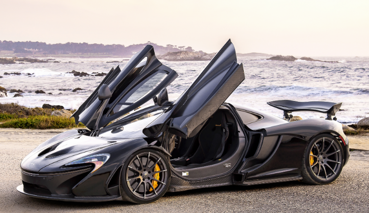
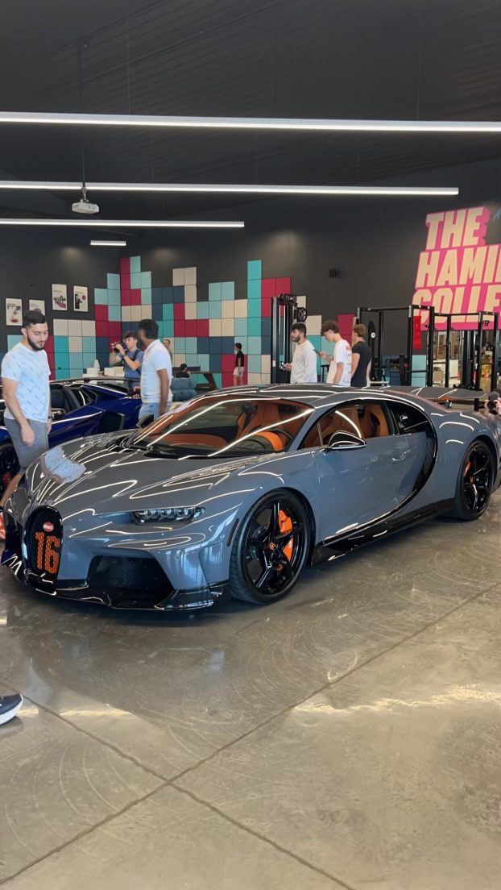
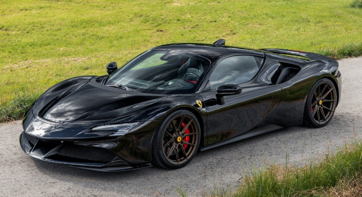

Ford Mustang GT500
This car is listed first for a reason. It's my dream car and I hope to own and drive my own GT500 one day. Here's what it sounds like!

This car is listed first for a reason. It's my dream car and I hope to own and drive my own GT500 one day. Here's what it sounds like!
This car is second for no particular reason. I love McLarens and the way their cars look.
This car and the Bugatti brand is by far the most iconic in the world of supercars. This car not only looks amazing but sounds amazing. This is definitely the best looking Bugatti ever made. I recently saw this car in person. Here's my own picture below!
This car looks extremely elegant. You could put any single color on this car and it would look fantastic no matter what.
